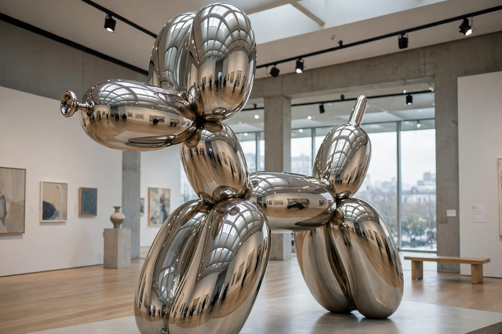

| Jeff Koons | |
|---|---|
 Balloon Dog, mirror-polished stainless steel | |
| Born | 21 January 1955, York, Pennsylvania, U.S. |
| Known for | Sculpture; Neo-Pop |
| Notable works | Rabbit (1986); Michael Jackson and Bubbles (1988); Puppy (1992); Balloon Dog (1994–2000) |
| Movement | Neo-pop, postmodernism |
Jeffrey Lynn Koons (born January 21, 1955) is an American artist recognised for his work dealing with popular culture and his sculptures depicting everyday objects, including balloon animals produced in stainless steel with mirror-finish surfaces. He lives and works in both New York City and his hometown of York, Pennsylvania. His works have sold for substantial sums, including at least two record auction prices for a work by a living artist: US$58.4 million for Balloon Dog (Orange) in 2013 and US$91.1 million for Rabbit in 2019.
Koons rose to prominence in the 1980s with series such as The New (vacuum cleaners in fluorescent-lit cases), Equilibrium (basketballs suspended in tanks), and Banality (1988), which included the porcelain Michael Jackson and Bubbles. His giant flowering topiary Puppy (1992) stands outside the Guggenheim Museum Bilbao. Koons employs a large studio of assistants to fabricate works to exacting industrial standards, comparing his role to that of an idea-driven producer. Critics are sharply divided: some celebrate his embrace of kitsch and consumer culture as a defining statement of postmodern art, while others dismiss the work as cynical and meretricious. His career has also been marked by copyright litigation over the appropriation of photographs.